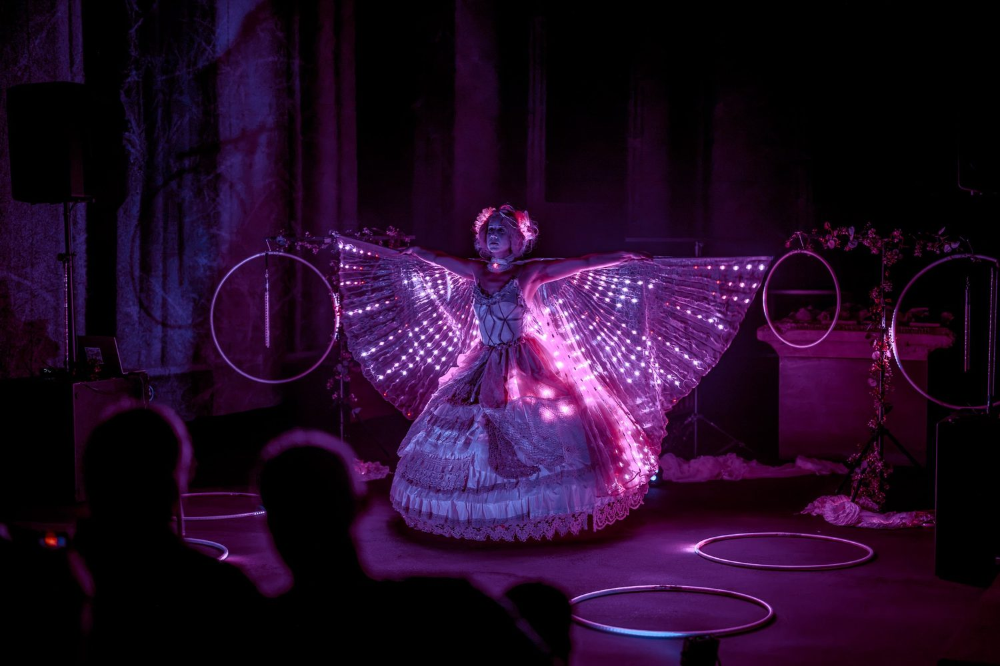
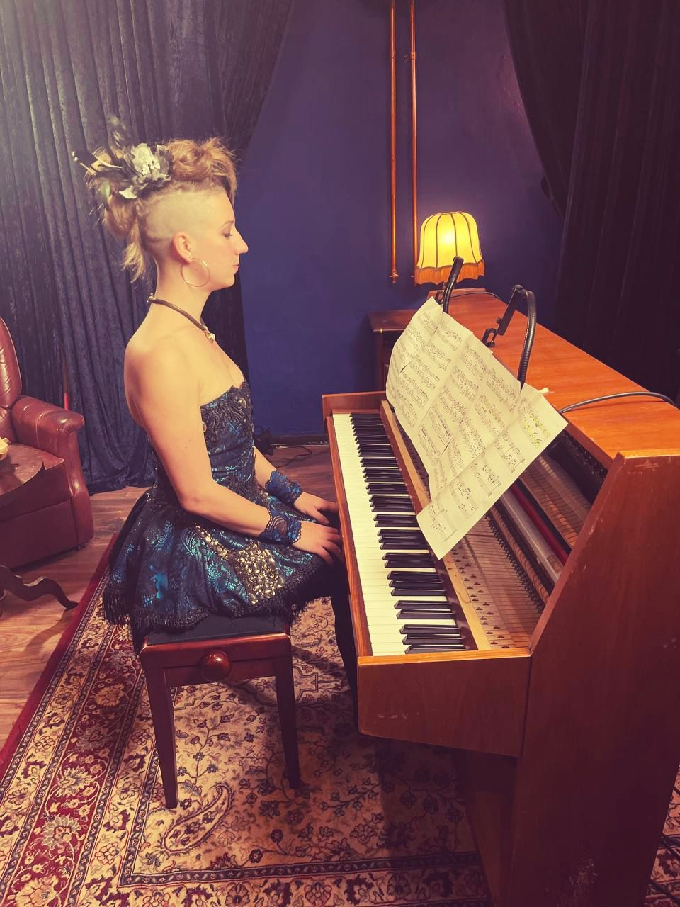
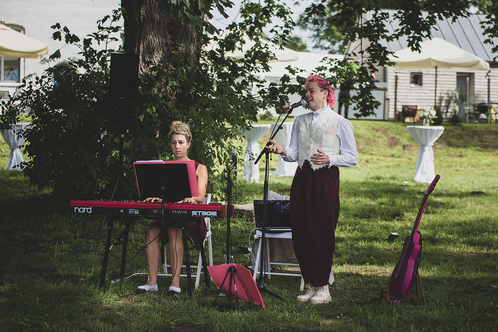
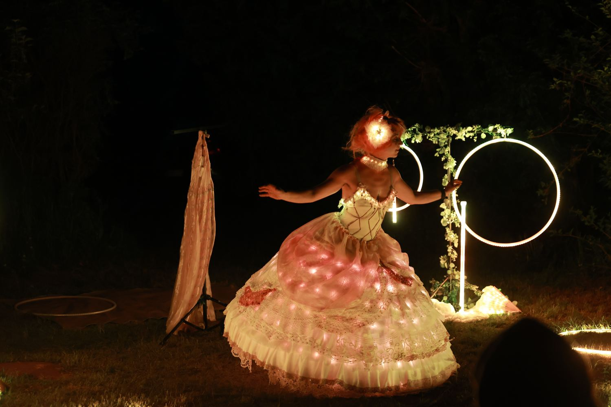

Ihre Namen
Ihre Namen, Ihre Initialen oder Ihr Hochzeitsdatum erscheinen als leuchtende Schrift in der Luft. Für viele Paare ist das der Moment, in dem alle die Handys zücken.
Lucina's Light ist der Moment des Abends, in dem alle gemeinsam staunen. Mit Ihren Namen, Ihren Fotos und Ihren Lieblingsmotiven mitten in der Show.

Wenn es dunkel wird, gehört die Tanzfläche für ein paar Minuten Lucina: leuchtende Flügel, LED-Reifen, schwebende Lichtstäbe und Musik, die unter die Haut geht. Eine poetische Soloshow, die Großeltern genauso verzaubert wie die Kinder.
Das Besondere für Ihre Hochzeit: Die Show wird für Sie programmiert. Ihre Namen, Fotos aus Ihrer gemeinsamen Zeit und Motive, die zu Ihnen gehören, erscheinen als Bilder aus Licht mitten in der Luft.
Die Show passt gut zwischen Dinner und Party oder als Überraschung kurz vor der Hochzeitstorte. Sie dauert so lange, wie es zu Ihrem Abend passt.
Ihre Namen, Ihre Initialen oder Ihr Hochzeitsdatum erscheinen als leuchtende Schrift in der Luft. Für viele Paare ist das der Moment, in dem alle die Handys zücken.
Schicken Sie ein paar Lieblingsbilder: vom ersten Urlaub, vom Antrag, von Ihnen beiden. Die Visual Poi zeichnen sie für einen Augenblick in den dunklen Raum.
Der Berg, auf dem Sie sich verlobt haben, Ihr Hund, das Logo Ihres Fußballvereins: Was zu Ihnen gehört, kann in der Show aufleuchten.
Die Show lässt sich auch heimlich buchen, von Trauzeugen, Eltern oder Freunden. Sie liefern die Bilder, das Brautpaar erfährt erst am Abend davon.

Ley ist auch Pianistin. Wenn Sie möchten, spielt sie am Nachmittag zu Ihrer Trauung oder zum Sektempfang und kommt am Abend mit der Lichtshow zurück. Ihr Einzugslied oder Ihr Lieblingssong werden eigens für Sie arrangiert.
Neoklassik, Pop und Filmmusik, gefühlvoll und nie aufdringlich. Hören Sie rein:
Mit dem Klick wird das Video von YouTube geladen (erweiterter Datenschutzmodus) — siehe Datenschutz.

Gesang und Klavier für Sektempfang, Dinner oder den ganzen Abend: Danilo und Ley spielen Pop, Chansons, Swing, Soul und Jazz und passen ihr Programm live an Raum und Stimmung an. Auch Ihr Eröffnungstanz kann live gespielt werden.
So lässt sich der ganze Tag aus einer Hand gestalten: Klavier zur Trauung, das Duo zum Empfang und Lucina's Light als Höhepunkt der Nacht.
Mit dem Klick wird das Video von YouTube geladen (erweiterter Datenschutzmodus) — siehe Datenschutz.
“Wir haben Lucina’s Light für eine größere private Veranstaltung gebucht und waren begeistert. Ley schafft mit Musik, Licht und Artistik eine Welt, in die man als Zuschauer komplett eintaucht. Eine unglaubliche Liebe zum Detail lässt alles perfekt ineinander greifen. Alle Gäste, groß wie klein, waren komplett verzaubert und begeistert.”
“Leys Show entführt einen in eine Traumwelt, aus der man nicht mehr zurück möchte. Mit großer Liebe fürs Detail, technischem Geschick und einem ästhetischen Auge. Wärmste Empfehlung!”
Sie schicken Ihre Wünsche und Bilder spätestens drei Wochen vor der Hochzeit. Ley bereitet sie für die Visual Poi auf und baut sie an einer passenden Stelle in die Show ein. Am besten wirken klare Motive mit starken Kontrasten, Ley berät Sie bei der Auswahl.
Die Show braucht Dunkelheit. Im Saal geht das jederzeit, wenn das Licht gedimmt wird. Draußen wird es im Hochsommer erst gegen 22 Uhr dunkel. Beliebt ist der Moment nach dem Dinner, als Auftakt zur Party.
Die ganze Show dauert etwa 30 Minuten und erzählt in sechs Akten eine Geschichte aus Licht. So haben auch Ihre Namen, Fotos und Motive genug Raum. Wenn es besser zu Ihrem Abend passt, gibt es kürzere Fassungen ab 5 Minuten.
Eine freie Fläche von etwa 4 × 5 Metern und 3 Metern Höhe, zum Beispiel die Tanzfläche. Eine Bühne ist nicht nötig. Die Musik läuft über die Anlage Ihres DJs oder der Location.
Von Frühling bis Herbst ja, etwa im Schlosspark oder auf der Terrasse. Im Winter findet die Show drinnen statt.
Ja. Ley spielt auf Wunsch Klavier zur Trauung oder zum Empfang, und mit Danilo & Ley gibt es ein Duo mit Gesang und Klavier für Empfang, Dinner oder den Abend. Alles zusammen kommt aus einer Hand.
Ja, das kommt oft vor. Ley stimmt dann alles mit Ihnen und der Location ab, das Brautpaar bekommt nichts mit.
Sommerwochenenden sind schnell vergeben. Fragen Sie am besten an, sobald Datum und Location feststehen.
Nennen Sie Datum, Location und ungefähre Gästezahl. Sie bekommen zeitnah ein Angebot und Ideen, was in Ihrer Show aufleuchten könnte.
Lieber direkt? info@leylotta.com
